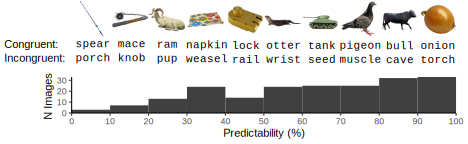
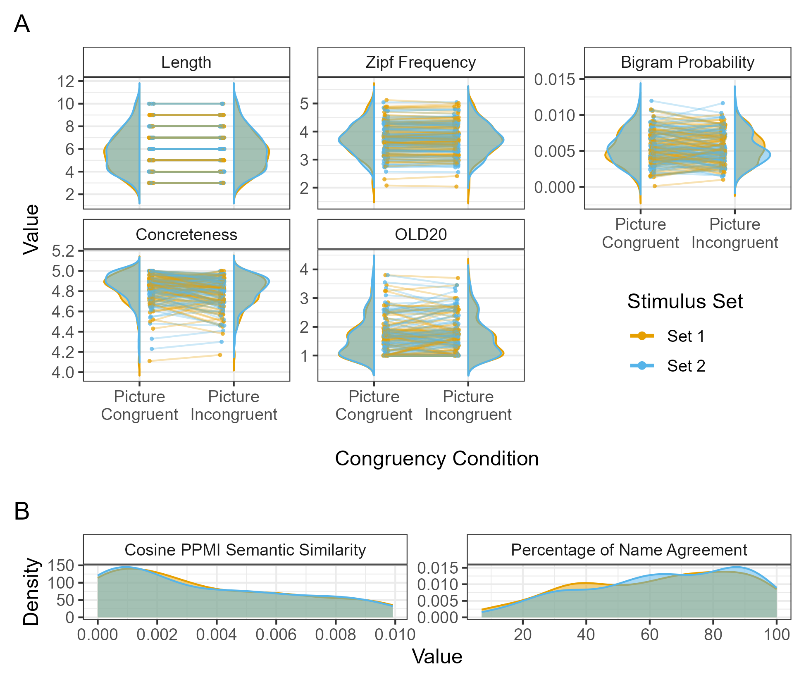
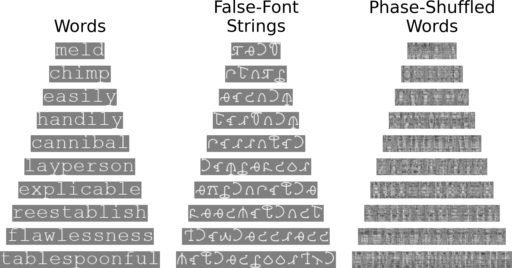
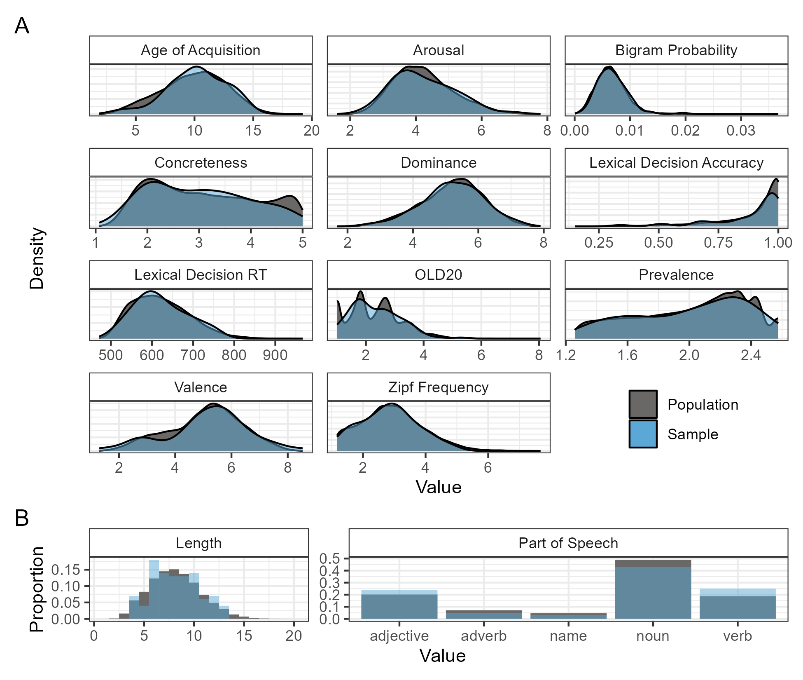

Stimuli Details
Picture-Word Stimuli

Picture-Word stimuli comprised pictures from the BOSS norms, and matched pairs of congruent and incongruent words, with predictability varied continuously.
A total of 400 words were selected with the R package, LexOPS (Taylor et al., 2020). There were 200 words per Congruency condition, with one congruent and one incongruent word per image. Images were taken from the Bank of Online Standardised Stimuli (BOSS) Norms (Brodeur et al., 2014). Congruent words were images’ modal names; Incongruent words were matched item-wise to each Congruent word.
Words were selected…
to have high word prevalence (Brysbaert et al., 2019) such that ≥90% of people knew each word.
to be nouns, according to dominant part of speech in SUBTLEX-UK (van Heuven et al., 2014).
to have a mean concreteness rating >4 (on a 1-5 scale; Brysbaert et al., 2014)
Picture-Congruent and -Incongruent words were matched on:
Word length (number of characters), exactly.
Concreteness according to Brysbaert et al. (2014), within ±.25
Zipf frequency (a logarithmic scale of word frequency) according to SUBTLEX-UK (van Heuven et al., 2014), within ±.125
Character bigram probability (calculated from SUBTLEX-UK), within ±.0025
OLD20 (the average Orthographic Levenshtein Distance of the 20 closest neighbours to a given word; Yarkoni et al., 2008) calculated from the LexOPS inbuilt dataset, within ±.75.
Matched pairs of Picture-Congruent and -Incongruent words also had:
Maximal distance from one another in orthographic Levenshtein distance.
A cosine PPMI semantic similarity value of ≤.01 according to the Small World of Words (De Deyne et al., 2019)
Each participant saw Set 1 or Set 2 of the stimuli, which determined which images preceded congruent, and which incongruent, words. These counterbalanced sets of stimuli were matched via overlap (Pastore & Calcagnì, 2019), to maximise distributional similarity in:
Percentage of modal name agreement according to the BOSS norms
Cosine PPMI semantic similarity according to the SWOW
Zipf word frequency according to SUBTLEX-UK
Character bigram probability according to SUBTLEX-UK
Word concreteness (Brysbaert et al., 2014)
Word length
OLD20 (Orthographic neighbourhood density)

Localiser Stimuli

Localiser stimuli comprised matched triplets of words (Courier New font), false-font strings (BACS2serif font; Vidal et al., 2017), and phase-shuffled words. The pre-registered comparison was between words and false-font strings; phase-shuffled words were included as an exploratory comparison.
Distributional similarity of the words to various variables was maximised via distributional overlap (Pastore & Calcagnì, 2019), as shown below.

Phase-shuffled words were generated by randomly permuting the phase distribution of images of words. A GitHub repository implementing this method is available here: https://github.com/JackEdTaylor/randphase